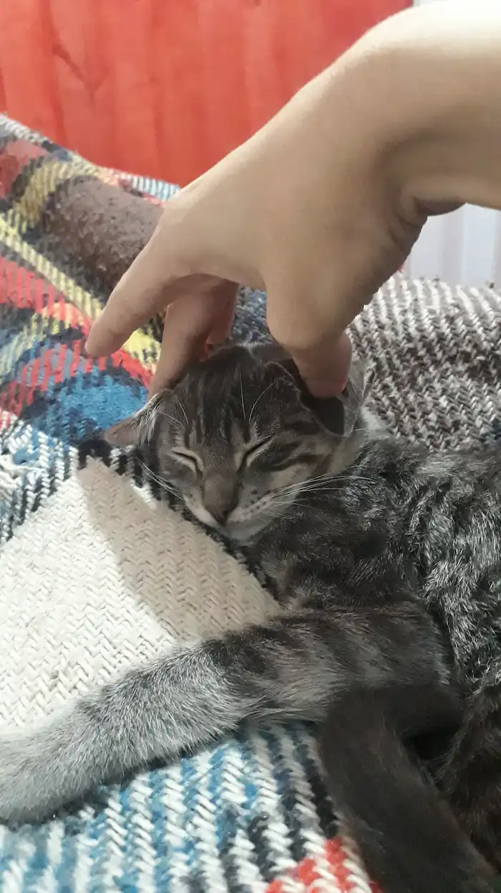
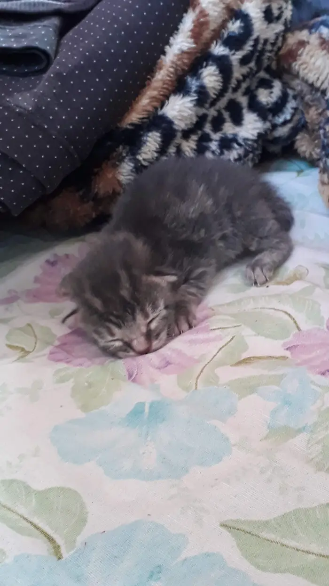

O gato de pelo curto brasileiro foi originado por volta de 1500, quando portugueses trouxeram bichanos britânicos para o Brasil. Mesmo que logo tenha se tornado gato de rua, o gato de pelo curto foi a primeira raça de gatos brasileira a ser reconhecida internacionalmente através da World Cat Federation em 1998, sendo antes considerado vira-lata.
O Brazilian Shorthair é a única raça de felino brasileiro a ser reconhecida mundialmente. Isso porque, em 1998, a Federação Mundial de Gatos aprovou o pelo curto brasileiro como um gato de raça pura.
Muito parecido com Shorthair britânico e americano, o gato de pelo curto brasileiro tem sua origem nos cruzamentos de gatos de pelo curto britânicos trazidos por marinheiros portugueses. Na década de 1980, o engenheiro Paulo Samuel Ruschi se interessou em criar um gato de raça pura a partir de gatos de rua brasileiros. Este é um processo que leva anos para ser feito, mas aconteceu.
No Pantanal, eles se dispersam na cheia e concentram-se perto de rios e áreas alagadas na seca. Possuem hábitos diurnos, com picos de atividade no início da manhã e final da tarde, evitando horários mais quentes. Porém, podem mudar seus hábitos para noturnos em regiões mais antropizadas, nas quais há a pressão de caçadores. Saltam com grande desenvoltura e nadam bem, podendo atravessar grandes rios. As fêmeas formam pequenos grupos familiares e os machos são mais solitários.
“A Mimicat foi eleita a gata de pelo curto mais fofa do brasil em 2019 quando nasceu!”
Essa raça de gato brasileiro possui uma condição física forte, ágil e um tamanho médio. O bichano é caracterizado por pernas longas, orelhas arredondadas de tamanho médio, olhos amendoados, cauda ligeiramente afilada, pelagem brilhante e justa.
A pelagem curta é variada nas cores, podendo ser laranja, marrom, malhado, etc., enquanto a cor dos olhos corresponde ao tom da pelagem. O felino exige poucos cuidados e é uma raça adequada para quem sofre de alergias devido à pelagem curta e de queda moderada.